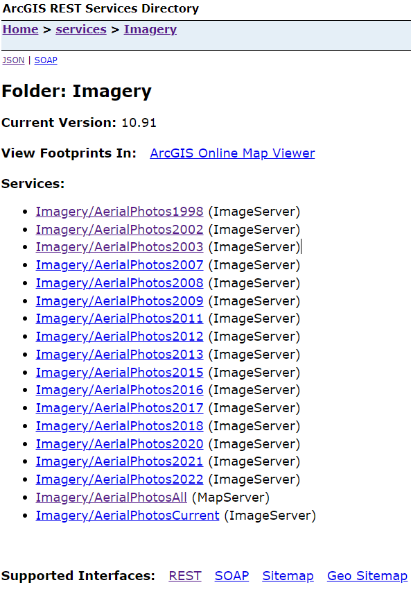

Creating custom FarmOS satellite tiles
![]()
Update me!
Here’s an exercise: head over to Google Maps, find your house, and note how long ago those satellite pictures were taken. Chances are it has been a while. Most of the time this is probably not an issue, but we are going through a period of rapid modification of our land, our house, and our farm as we hack it out of the woods and its 15-year-long abandonment.
Getting some REST
Similar to their Google Maps add-on, the FarmOS user Symbionique had created a FarmOS add-on in the Drupal framework that allowed access to satellite imagery of the San Juan Islands. The add-on leverages an ArcGIS RESTful API that is used by many governmental agencies. And, just my luck, both my local county (Henrico, VA) and my Commonwealth (Virginia) were also providing current satellite imagery via REST APIs!
The San Juan Islands, Henrico County, VA and the Commonwealth of Virginia are not unique in providing this service. Head to your favorite internet search provider and look for “YOUR LOCALITY arcgis rest services” and you might be able to find one of your own.
To start taking advantage of these services, go ahead and clone one of the related repositories on on my GitHub. Map tiles of Virginia can be found here and tiles of Henrico County, VA can be found here.
Most of what we will wind up doing is renaming files. But first:
An image by any other name…
After you find your locality’s REST service, you’ll need to do some poking around to find out what that locality has named its images. In San Juan, it was Basemaps/Aerials_yyyy; Virginia was listed as VBMP_Imagery/VBMPyyyy_WGS; Henrico as Imagery/AerialPhotosyyyy where “yyyy” represents the year of the image. It will usually have “MapServer” in parentheses next to it, but it could also be “ImageServer”.

At the bottom of this page, there will be a section titled “Supported Interfaces”. One of the options should be “REST”. When you click on that, it should produce a JSON version of the index. See everything under “services”?? This is the treasure for which you’ve come!
JSON meat
Drupal, which FarmOS is built upon, leans heavily on JSON to parameterize its plugins. You can find the “meat” of this add-on in the js/ folder. This folder contains one script with one function, which takes the JSON list we found above and uses that to create URLs and names of all of the base layers. Part-way down the code, you’ll see a variable called “basemaps” being defined. It looks something like this:
#| eval: false
var basemaps = [
{
"name": "Imagery/AerialPhotos1998",
"type": "ImageServer"
},
{
"name": "Imagery/AerialPhotos2002",
"type": "ImageServer"
}
];Notice any similarities? Yep, it’s the REST JSON we found before. Copy everything under “services” and paste it right in there.
We’ve now provided the function with the information it needs to call up the map tiles once it knows where to find the server. The next section of the function utilizes the basemaps variable we defined above to build out the URL to the server. The function is looped over every map located in the basemaps variable.
#| eval: false
basemaps.forEach(function(basemap) {
var opts = {
// Create name from the stuff after the slash
title: "Henrico " + basemap.name.split('/')[1],
// Put together the URL
url: 'https://portal.henrico.us/image/rest/services/' + basemap.name + '/' + basemap.type,
visible: false,
base: true,
group: 'Base layers',
};
instance.addLayer('arcgis-tile', opts);
});And that’s about it – all of the hard stuff is over. There is, however, one thing left to do, and it’s kind of annoying
Find everything with “henrico” in it
Yes, it gets its own section. We now need to go through and personalize the add-on by changing every instance of “henrico” to whichever locality we’re representing. It’s easy, but there are quite a few references to the locality hidden in there. Check file names, variable names, everything. CTRL-F the whole repo. Seriously.
Install the add-on
After this is done, install the add-on as you otherwise would. git clone the repository into your FarmOS folder and activate it via the web interface. If you need tips on how to do this, check out my previous post on how to add a FarmOS module to your home server.